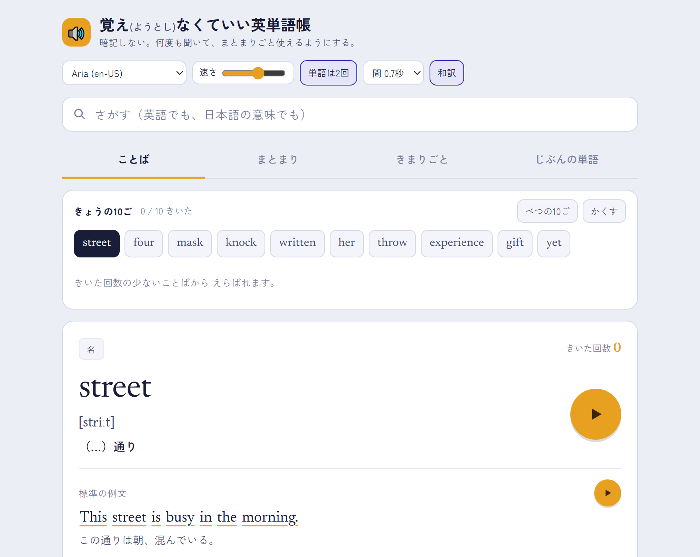

英語 ／ 中学
覚え（ようとし）なくていい英単語帳
暗記の苦手さをまずは受け止める単語帳です。何度も聞いて、まとまりごとに単語や表現を使えるようにします。
読み上げの声・速さ・繰り返す回数・間の秒数・和訳を出すかどうかを、生徒が自分で決められます。
「きょうの10ご」に出てくる語は、その子が聞いた回数が少ないものから選ばれます。教える側の大切にしている思いや指針を、画面の動きとして実装してあります。
例文は、その子の興味に寄せて作り直せます（フルバージョンの場合）。サッカーが好きな子にはサッカーの文、ゲームが好きな子にはゲームの文。同じ語でも、自分の世界の言葉で出てくると入り方が変わります。
試用版です。インストールは要りません。開いたらすぐ動きます。
- 見出し語
- 1,678（単語 1,352／熟語 291／短縮形 35）
- 人名・地名
- 108 件
- 例文
- 標準の例文を全語に収録。加えて興味・関心に応じて生成（フルバージョンの場合。サッカー／ゲーム ほか）
- 長文
- 6 本
- 配布の形
- HTML 1 ファイル（439 KB）
- 動作条件
- サーバー不要・インストール不要（フルバージョンの利用にはインターネット環境が必要）
- オフライン
- 一度開けば、ネットなしで単語・標準の例文・読み上げ・長文まで使える（例文の生成はネットが必要）
- 元データ
- 教科書を書き起こした CSV。差し替えれば別の単語帳になります
- 販売価格
- 近日発売予定